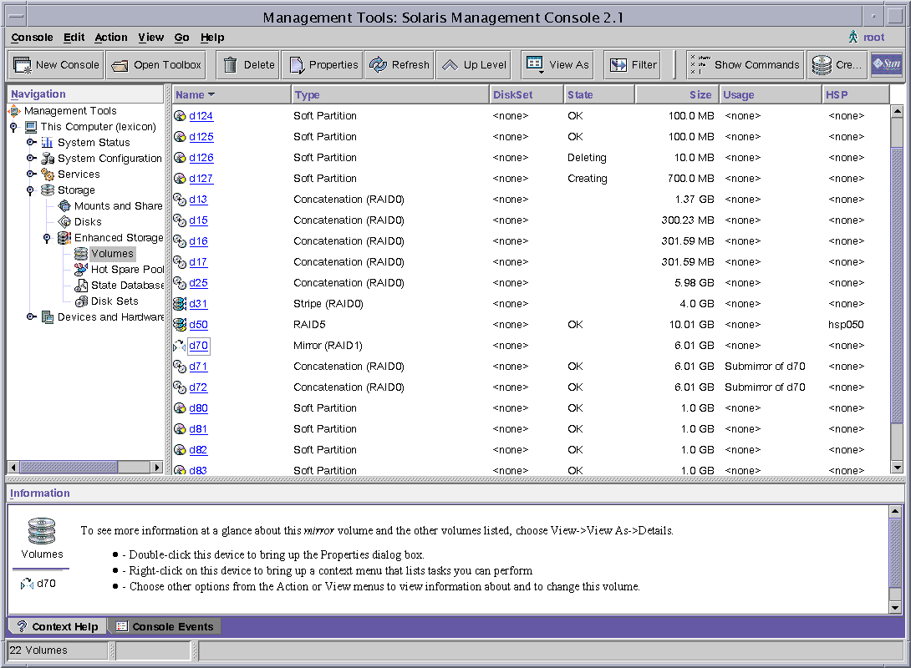

|
|||
|
1. Getting Started With Solaris Volume Manager 2. Storage Management Concepts 3. Solaris Volume Manager Overview What's New in Solaris Volume Manager Introduction to Solaris Volume Manager How to Administer Solaris Volume Manager How to Access the Solaris Volume Manager Graphical User Interface (GUI) Solaris Volume Manager Requirements Overview of Solaris Volume Manager Components Solaris Volume Manager Configuration Guidelines Overview of Creating Solaris Volume Manager Components Overview of Multi-Terabyte Support in Solaris Volume Manager Upgrading to Solaris Volume Manager 4. Solaris Volume Manager for Sun Cluster (Overview) 5. Configuring and Using Solaris Volume Manager (Scenario) 8. RAID-0 (Stripe and Concatenation) Volumes (Overview) 9. RAID-0 (Stripe and Concatenation) Volumes (Tasks) 10. RAID-1 (Mirror) Volumes (Overview) 11. RAID-1 (Mirror) Volumes (Tasks) 12. Soft Partitions (Overview) 16. Hot Spare Pools (Overview) 20. Maintaining Solaris Volume Manager (Tasks) 21. Best Practices for Solaris Volume Manager 22. Top-Down Volume Creation (Overview) 23. Top-Down Volume Creation (Tasks) 24. Monitoring and Error Reporting (Tasks) 25. Troubleshooting Solaris Volume Manager (Tasks) A. Important Solaris Volume Manager Files B. Solaris Volume Manager Quick Reference |
How to Administer Solaris Volume ManagerUse either of these methods to administer Solaris Volume Manager:
Note - Do not attempt to administer Solaris Volume Manager with the command line and the GUI at the same time. Conflicting changes could be made to the configuration, and its behavior would be unpredictable. You can use both tools to administer Solaris Volume Manager, but not concurrently. Figure 3-1 View of the Enhanced Storage Tool (Solaris Volume Manager) in the Solaris Management ConsoleHow to Access the Solaris Volume Manager Graphical User Interface (GUI)The Solaris Volume Manager GUI (Enhanced Storage) is part of the Solaris Management Console. To access the GUI, use the following instructions:
|
||
|